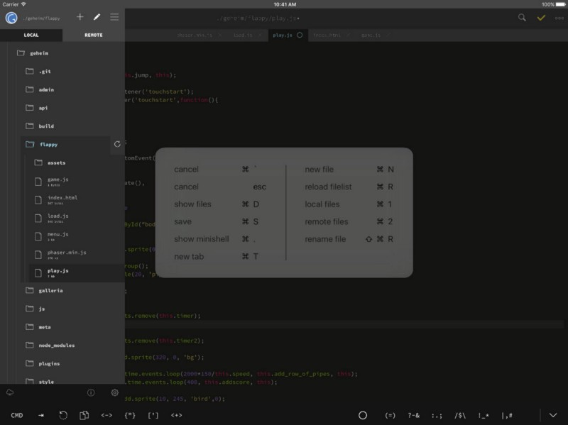
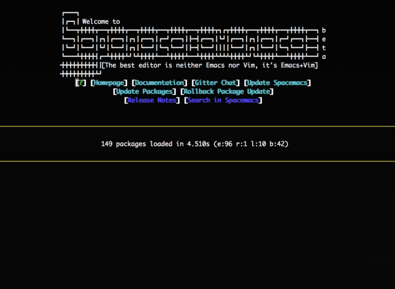
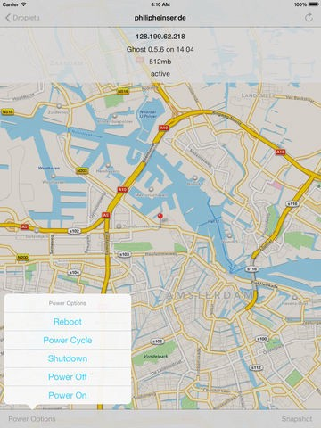
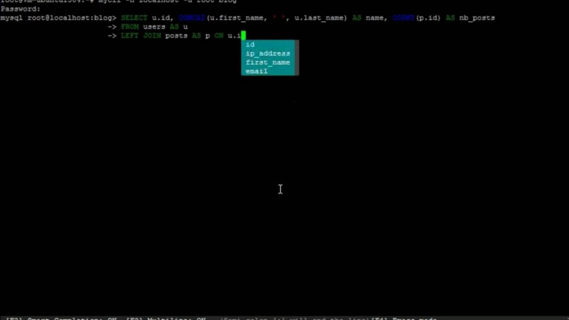
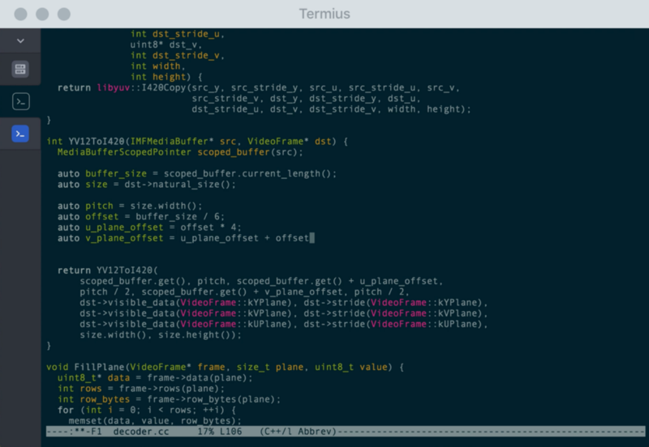

The iPad Pro as a focused, simple coding machine
Posted on Sat 20 January 2018 in Tech
So recently I wrote a post on why a developer might use an iPad Pro as an at home machine. Today, I'm going to elaborate on how I'm actually using it day to day.
So there is not much you can do locally
Realistically, as a local dev environment there really is not much an iPad Pro can do. I'm used to proper Linux/Unix based machines, these sandboxed apps just didn't cut it for me, there's nothing close to a full development system on an iPad(sorry I know!), I wouldn't even bother trying. So pretty quickly I opted to go for a remote Linux box that I could remotely access.
I picked up an iPad Pro with the ability to add in cellular data, so I can hop onto my remote server from anywhere I have data, which made this a solid possibility. I know I am basically cheating, but, I still needed to investigate if there was a painless enough setup I could use on the iPad that I would actually continue to use. So a fast starting server, decent network connection, and a decent enough editing environment was essential.
Editing Code
Now that I've already pulled back the curtain(you can't really code just on an iPad), we need to decide on a method of remotely editing code. I've used Vim for years, for me, I was happy to just ssh onto the server using some terminal client, setup a nice Vim environment and be done. Everything went well setup wise, but unfortunately vim editing sucks a lot more when you're missing an escape key. Which the iPad Pro Smart Keyboard does not have and I'm not lugging around a second keyboard just for the ESC key.
There is hacky ways with other shortcuts to get esc working, there's also an onscreen esc key that terminal clients provide for IOS, but it's just just the same, my decade old Vim muscle memory makes the whole thing too painful when I keep hitting backtick constantly. So Vim was out the window.
I tried a few different options but in the end, GoCoEdit was the best available. It can remotely mount folders over ssh, it performs pretty well over networking and it has a fairly decent interface(sublime textish if that helps).

If you do more web-based editing, I hear Coda is pretty great but not what I wanted for my needs. I'm a more terminals, piping and grepping, not pretty pages and CSS.
What I'll probably end up doing is setting up Spacemacs with the Emacs configuration and seeing if I can finally pull the trigger and start using Emacs's crazy keybindings, but I'm not learning a whole new set of editor shortcuts right now.

Executing Applications
Which remote server
I needed a way to be able to spin up/shut down a remote Linux box, have it start-up pretty quickly and do this in the painless way as possible, because I'm not paying for constantly on uptime when this is only being used very occasionally by myself. I also wanted it to be connectable via the same access details each time, to avoid having to put in new server IPs into my terminal client every time I started up the server.
I tried out both Vultr and DigitalOcean for this, mostly as they were relatively straightforward to work with and this is mostly for me playing around with things, not production uptime machines. So in the end it came down to speed and App quality. Cutting a long story short, DigitalOcean won out. It supported having a reserved ip, which meant I didn't need to rely on something like DynDNS/waiting for DNS propagation each time I powered it down/up again(or manually setting IPs). It was also very quick to spin up, like shockingly quick. If I requested a power-up via the DigitalOcean IOS app, by the time I'd swapped to my ssh client and connected, it was already up, which was crazy good for me. I could also run an instance from London which reduced latency a bunch for me, that was a nice advantage over Vultr. To add to it, the app that could connect to DigitalOcean seem to be of a better quality(and actually worked, which is nice). None of the apps tested were particularly amazing but the DigitalOcean one consistently worked and worked well. So from my perspective, I'd strongly suggest DigitalOcean for such a setup.

So people know, the DigitalOcean app I tried was DigitalOcean Manager and the Vultr one was called Vulture.
Remotely connecting
So here's the list of tools I use for connecting to various services I might need.
SQL Client
So on the App Store there are a few SQL Clients but none of them looked so great. So I just use mycli on the server itself, works just fine.

Termius
I've been a Linux user for so many years, I'm pretty comfortable working exclusive on the command line. Termius is the de-facto ssh terminal client for IOS and for good reason. I ran it, it worked perfectly and never even bothered looking at anything else.

Docker
I would definitely recommend picking up some Docker knowledge if you haven't already. Being able to quickly spin up services on a remote machine is really handy. For example I wanted to migrate from my static content pelican site to Medium, but Medium only accepts Wordpress archives. So I spun up a basic Wordpress Docker, used a quick script(with a few of my own bugfixes) to import my static content to Wordpress and exported to Medium, all without touching the parent operating system. All very nice!
A Handy Tip
So one thing that might be useful is when you exit your little server to have it automatically shut down so you don't need to keep remembering to kill the server via the app. If you want to do this without needing to enter a password each time, firstly run this command to start editing the sudoers file.
sudo visudo
Then add this line to allow passwordless access to poweroff commands.
username ALL=(ALL) NOPASSWD: /sbin/poweroff, /sbin/reboot, /sbin/shutdown
Then create an alias for your user so that when you hit exit, it actually shuts down the machine. Put this in your .bashrc or .zshrc or whatever rc your shell uses.
alias exit='sudo poweroff'